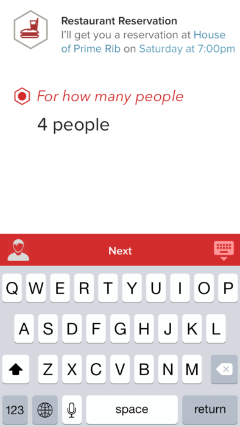

How many times have you heard of "the uber for x"? Or "the airbnb for y"? There is an explosion of on demand services. As a user though, it's hard to know of or even keep track of all these things. That's where Proxy comes in. You ask Proxy for anything in natural language, and behind the scenes, Proxy will classify your request, proxy it to the right service, and fulfill it of you. On demand anything.
